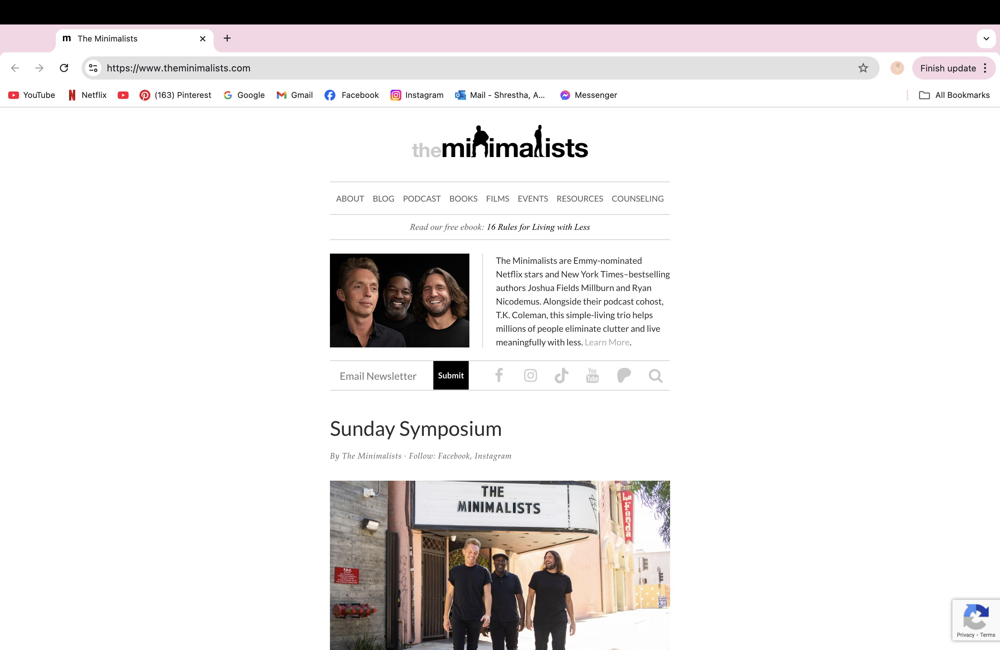

The Minimalists Blog Evaluation

Evaluation Questions
- URL of the Website:
- https://www.theminimalists.com/
- Name of the Website:
- The Minimalists Blog
- Target Audience:
- The Minimalists Blog is designed for individuals interested in minimalism and simplifying their lives. This blog includes audiences ranging from young adults to professionals seeking for minimalistic lifestyle.
- Organization Site:
- The site is organized into sections such as blog post, books, podcast and document. There is navigation bar on the top so that it can make it easier to access each category.
- CRAP Design Principle Used:
- The site uses Repetition which maintain a consistent color scheme of black, white and grey.
- Accssibility Audit Score:
- The audit score, according to the Accessibility Checker, is 95 out of 100.
- Site Effectiveness:
- The site is effective because it provides to easy access to content like blog post and podcast making it easier for users to find what they're interested in.
- Site Effeciency:
- Users can navigate he site due to ts simple and well-organized layout.
- Engagement:
- The site is easier to use it clean and distraction free layout that match up with the theme of minimalism.
- Recomendation for Improvement:
- Adding alt text to some images so that it would be easier to navigate.